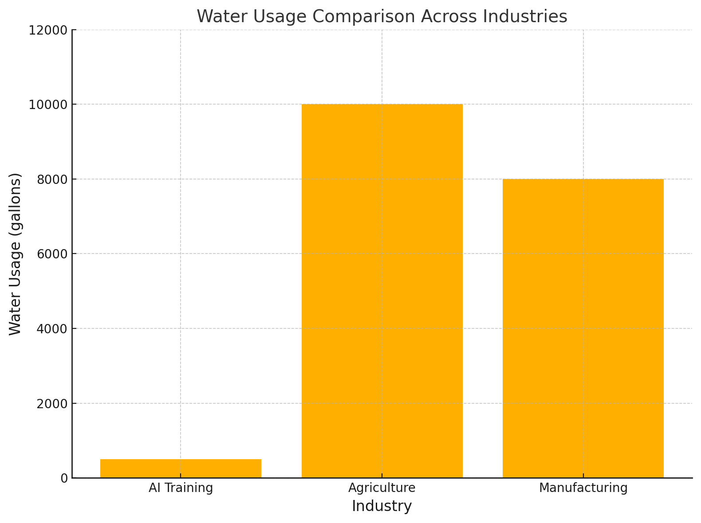
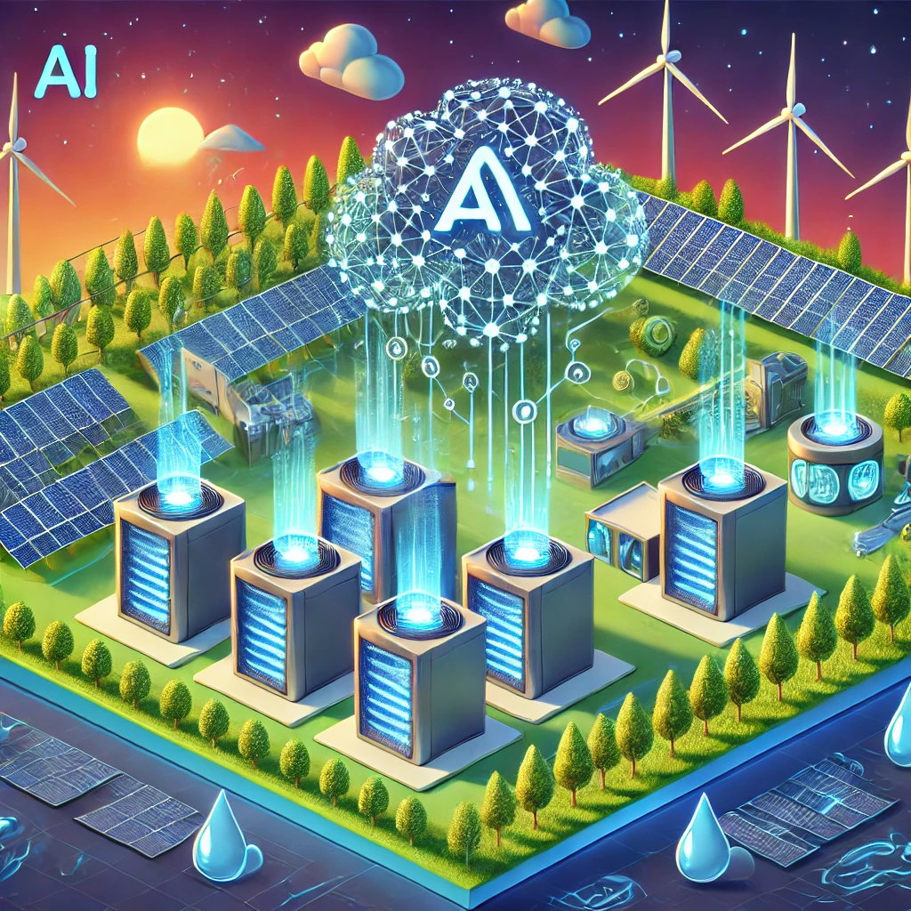

How Does ChatGPT Drink Water? The Hidden Cost of AI Models
Introduction
Did you know that every conversation with ChatGPT comes with a surprising hidden cost? While these AI models don’t literally drink water, they’re actually significant water consumers thanks to the massive data centers that power them.
Behind every AI response lies a fascinating process: enormous data centers packed with powerful computers work intensively to analyze your question and generate an answer. These machines run hot – very hot. To prevent overheating, they need constant cooling, and that’s where water plays its crucial role. Traditional cooling systems use millions of gallons of water to keep these digital brains running smoothly.
The scale of this water usage is remarkable. Training a large language model can consume as much water as manufacturing several cars. And it doesn’t stop there – every time we interact with these AI systems, more computing power is needed, requiring more cooling and, consequently, more water. This creates an interesting paradox: while AI helps us solve complex problems and improve efficiency in many areas, it also places a growing demand on one of our most precious resources.
This blog explores the unexpected relationship between AI and water consumption, focusing particularly on ChatGPT as an example. We’ll examine how these systems actually use water, what this means for our environment, and the innovative solutions being developed to address this challenge. Understanding this connection is becoming increasingly important as AI continues to integrate into our daily lives and reshape our technological landscape.

The Science Behind AI Water Consumption
Understanding how AI uses water starts with a journey inside a modern data center – imagine a warehouse-sized building filled with thousands of powerful computers, all working in perfect harmony. These aren’t your everyday laptops; they’re industrial-grade servers that form the backbone of AI operations. Let’s break down exactly why and how these systems are so thirsty.
The Cooling Challenge (Keeping AI’s Brain from Overheating)
When you ask ChatGPT a question, hundreds of processors spring into action, performing trillions of calculations per second. All this computational work generates an enormous amount of heat – enough to damage or destroy the equipment if left unchecked. To put this in perspective, a single AI server can generate more heat than ten household ovens running at full blast.
This is where water enters the picture. Modern data centers employ sophisticated cooling systems that work in several ways:
- Direct Water Cooling: Cold water pipes run directly through server racks, absorbing heat like a car’s radiator.
- Evaporative Cooling: Water is sprayed into the air, creating a cooling effect as it evaporates.
- Chiller Systems: Massive industrial chillers use water to remove heat from the building, much like your home air conditioner but on a massive scale.
The Power Behind the Processing (Water’s Hidden Role)
But cooling is only half the story. Before a single calculation happens, water has already played a crucial role in powering these facilities. Here’s how:
- Power Generation: Most electricity still comes from traditional power plants, where water boils to create steam that spins turbines (Google Environmental Report 2022).
- Power Plant Cooling: After generating electricity, these plants need massive amounts of water to cool down their systems.
- Transmission: Even the process of transmitting electricity to data centers involves equipment that requires cooling.
A Complex Water Web:
- A typical coal or nuclear power plant uses 20–60 gallons of water to generate one kilowatt-hour of electricity (Current Developments in Cooling).
- Large data centers can consume as much electricity as a small city.
- The combination of power generation and cooling means each AI query has a larger water footprint than most people realize.
Measuring the Impact
To understand the scale, consider these numbers:
- A typical data center uses 3–5 million gallons of water per day.
- The cooling systems alone can account for 40% of a data center’s electricity usage.
- In hot climates or during summer months, water consumption can increase by up to 50% (Google Environmental Report 2022).
The Regional Challenge
The impact of this water usage varies significantly by location:
- Cold regions like Norway or Iceland naturally require less cooling.
- Arid regions face greater challenges, as water is already scarce.
- Coastal locations might use seawater for cooling, reducing freshwater consumption.
This complex relationship between AI computing, power generation, and cooling systems creates a significant water footprint that extends far beyond the visible infrastructure. Understanding these connections is crucial for developing more sustainable solutions and making informed decisions about AI deployment and use.
Real-World Data (Quantifying the Impact)
The numbers behind AI’s water usage are eye-opening. Imagine a standard Olympic swimming pool – now picture filling and draining it every single day. That’s roughly how much water a large data center uses just for cooling. To put this into perspective, while you’re reading this sentence, data centers around the world are using more water than a typical household uses in a month.
Let’s look at some concrete examples. Google, one of the tech giants powering numerous AI systems, used a staggering 15.79 billion gallons of water in 2022 for their data centers. That’s enough water to fill nearly 24,000 Olympic-sized swimming pools, or to provide drinking water to a city of 300,000 people for an entire year.
The energy demands are equally striking. Training a sophisticated AI model like GPT-3 requires an enormous amount of computing power. To understand the scale: the energy needed to train just one of these models could power several thousand American homes for a year. That’s equivalent to leaving your television on for over 800 years straight, or charging your smartphone every day for the next 5,000 years (Studies on Data Centers).
These numbers aren’t just statistics – they represent real resources being used in real places, often in regions where water scarcity is already a pressing concern. This consumption raises important questions about how we balance technological advancement with environmental responsibility, especially as our reliance on AI continues to grow.

Broader Implications for Sustainability
When we talk about water and AI, we’re not just discussing tech industry challenges – we’re touching on one of the most pressing issues of our time. Picture Earth from space: that beautiful blue marble has a limited supply of freshwater, and we’re already pushing those limits.
As AI technology grows, it’s creating an interesting dilemma. While these systems help us solve complex problems like climate modeling and efficient resource use, they’re also adding pressure to our water resources. It’s a bit like using water to find ways to save water – there’s an inherent tension there.
In many parts of the world, getting clean water is already a daily struggle for millions of people. The tech boom, including AI development, adds another competitor for this precious resource. Meanwhile, climate change is making water supplies even less predictable. When data centers set up shop in water-stressed regions, they’re essentially pulling from the same water bucket as local communities and farms (Current Developments in Cooling).
But there’s hope on the horizon. The shift to renewable energy could be a game-changer. Solar and wind power typically use far less water than traditional power plants, offering a path to reduce AI’s thirst.
Steps Toward Sustainable AI
The good news is that smart people around the world are working on creative solutions to make AI more sustainable. Here’s what’s happening:
Engineers are developing cooling systems that are more clever than ever. Some data centers are experimenting with liquid cooling – imagine submerging servers in special non-conducting fluids that are far more efficient than water. Others are using advanced air cooling systems in cold climates, literally letting nature do the heavy lifting.
The energy piece of the puzzle is changing too. Tech companies are increasingly powering their data centers with renewable energy. Microsoft, Google, and others have made bold commitments to use 100% renewable energy, which naturally leads to lower water consumption (Google Environmental Report 2022).
Perhaps most exciting are the breakthroughs in AI efficiency itself. Researchers are finding ways to train AI models that require less computational power – and therefore less cooling – while maintaining or even improving performance. It’s like teaching a car to go further on less fuel.
These solutions aren’t just theoretical – they’re being implemented right now, showing that technological progress doesn’t have to come at the environment’s expense. As these innovations continue to develop, they’re paving the way for more sustainable AI that can help solve global challenges without creating new ones.

Conclusion
The AI revolution is changing our world in remarkable ways. ChatGPT and similar AI models help us write, solve problems, and even create art – but every technological leap comes with responsibility. By understanding the hidden water costs behind our AI interactions, we can make smarter choices about how we develop and use these powerful tools.
The story of AI and water teaches us an important lesson: innovation doesn’t happen in a vacuum. Every line of code, every query processed, and every response generated creates ripples that extend far beyond our screens. The good news is that awareness is growing, and the tech industry is responding with innovative solutions that could make AI both more powerful and more sustainable.
As we move forward, each of us has a role to play. Users can make informed choices about their AI usage. Tech companies can prioritize sustainable practices in their development. Policymakers can create frameworks that encourage responsible innovation. Together, we can ensure that the future of AI aligns with the future of our planet.
The journey toward sustainable AI isn’t just about preserving resources – it’s about proving that human ingenuity can solve problems without creating new ones. As we continue to push the boundaries of what AI can do, let’s make sure we’re moving toward a future that’s not only smarter but also more sustainable.